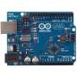

Featured Products
Arduino uno
The Arduino Uno Rev3 SMD is a microcontroller board based on the ATmega328. It has 14 digital input/output pins (of which 6 can be used as PWM outputs), 6 analog inputs, a 16 MHz ceramic resonator (CSTCE16M0V53-R0), a USB connection, a power jack, an ICSP header, and a reset button. It contains everything needed to support the microcontroller; simply connect it to a computer with a USB cable or power it with a AC-to-DC adapter or battery to get started. The Uno differs from all preceding boards in that it does not use the FTDI USB-to-serial driver chip.
- Original Price: ₹350
- Discounted Price: ₹300